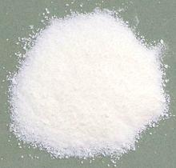

SAFARI
Users
- General & History
- Varieties of Milk & Milk Products
- Milk - in various forms.
- Cream - fresh and cultured.
- Butter - various versions.
- Yogurt & Fermented Milk Products - a separate page.
- Cheese - a really big subject with its own pages.
- Nutrition & Health
- Links
General & History
Mammals feed their young with secretions from the mammary glands, for which they are named. The evolution of these glands is currently very uncertain, as fossil evidence of such soft tissues is largely not preserved. These complex and nutritious secreted fluids are called "Milk".
Milk is a new element in the diet of adult humans, beginning only 8 to 10 thousand years ago, when several milk producing beasts were domesticated. This was done by successive selection and breeding by over a great many generations. Goats may have been first, followed by sheep and then cattle. These beasts are genetically different from their wild precursors, and they would be of very questionable viability returned to the wild.
Animals, including humans, lose their ability to produce the enzyme lactase, necessary to digest lactose in milk, upon being weaned from their mother's milk. The ability to retain lactase production into adulthood was evolved in the harsh environment of nomadic herding societies in temperate regions, and does not exist in arctic or tropical cultures.
The fat, enzyme and microbial makeup of animal milk differs significantly from human mother's milk. As evidence of the effects of these differences, as well as social effects, has accumulated, the trend away from breast feeding human babies has been reversed. Even doctors of conventional medicine now recommend it.
Varieties of Milk & Milk Products
Milk
- [Cow squeezings; Leche (Spanish)]In North America, we are most familiar with milk from cows, but it is also obtained from water buffalo, goats, sheep, horses, donkeys, camels, moose, reindeer and yaks, depending on region. Many regions of the world are not at all suitable for herding cattle. Of course, the nutritionally ideal milk for feeding human infants is from human females, particularly the milk provided right after birth which transfers antibodies and growth factors from the mother.
Dairy cattle have been selected and bred for very high milk production, far more than would be produced in nature, 8 to 10 gallons a day. They are pretty much dependent on humans to milk them twice a day or they will be in pain.
Milk is a very complex substance, composed of water, proteins (3.3%), particularly caseins, carbohydrates (4.9%), particularly Lactose, Fats (3.4%), over 400 fatty acids, a wide selection of vitamins, both water and fat soluble, minerals, and a selection of enzymes (percentages are for cow milk).
The fats can be separated from the milk as cream, either partially or entirely - or the milk can be homogenized to incorporate all or part of the fat inseparably into the milk. The proteins and carbohydrates can be separated out to form cheese.
Milk can be pasteurized with heat to sterilize it, with consequent
loss of nutrients (see Nutrition &
Health). Milk from pastured cows can be expected to be
significantly more nutritious than milk from factory fed cows.
Buttermilk In the traditional method of making butter, after churning, the whey
drained off from the solid butter is called "Buttermilk". Because the
cream would have been gathered from several days milkings it would
have become somewhat sour from fermentation. Today, most buttermilk
is made by processes designed specifically for sale as buttermilk.
Buttermilk is a common ingredient in pancakes and baked goods.
Ingredients for a local "all natural" brand: milk, nonfat
milk, culture, salt.
In the traditional method of making butter, after churning, the whey
drained off from the solid butter is called "Buttermilk". Because the
cream would have been gathered from several days milkings it would
have become somewhat sour from fermentation. Today, most buttermilk
is made by processes designed specifically for sale as buttermilk.
Buttermilk is a common ingredient in pancakes and baked goods.
Ingredients for a local "all natural" brand: milk, nonfat
milk, culture, salt.
Condensed MilkThis product is so viscous it is barely pourable, and it tastes like liquid caramel candy - which is what it is. It is made of milk clarified to remove impurities, standardized to a specific fat content, heated to about 190°F/88°C and evaporated to around 60% volume. Sugar is then added to about 45% by weight. This very high sugar content protects the milk from spoiling, making cans of this product shelf stable for years. While it first became popular as field rations during the
American Civil War, it is now much used as an ingredient in
deserts and sweets. In various regions it is also used as a spread
on bread and quite widely as an ingredient in coffee and tea.
Evaporated Milk This product is similar to condensed milk, but made by a somewhat
more complex process because without sugar it's more perishable.
It is lighter in color and tastes considerably more like milk.
After evaporation it is about half the volume of the milk it is made
from. It is then homogenized, canned and sterilized with heat. The
heat gives it a slightly caramelized flavor and a slightly darker
color than fresh milk.
This product is similar to condensed milk, but made by a somewhat
more complex process because without sugar it's more perishable.
It is lighter in color and tastes considerably more like milk.
After evaporation it is about half the volume of the milk it is made
from. It is then homogenized, canned and sterilized with heat. The
heat gives it a slightly caramelized flavor and a slightly darker
color than fresh milk.
This product was very popular before refrigeration was widespread
as it has an acceptable shelf life at room temperature. Today it is
used mostly for baked goods and deserts in the West, and used in
tea in Singapore and Malaysia. It should be used in less than a
year after canning.
Powdered Milk- [Dry milk, Instant milk] This product is made by evaporating milk, which may be whole, skim or non-fat, down to 50% solids, then spray drying it into a light dry powder which, in a sealed container, has a very long shelf life. It's nutritional content is comparable to liquid milk, but it does have a higher content of oxysterols, which are thought to encourage formation of arterial plaque. Powdered milk is used in various baked goods and confections where adding liquid milk would add too much water. It is also popular with hikers due to its low weight and survivalists due to its long shelf life. In the motion picture industry it is used as a prop in place of real cocaine to assure their actors are still functional after snorting it. |
Cream
 This is the butterfat in the milk, which can be skimmed off after
unhomogienized milk has been allowed to stand, or, in industrial
production, separated in a continuous centrifuge. Cream from the milk of
pastured cows eating a natural diet may be slightly yellowed, in other
words, cream colored.
This is the butterfat in the milk, which can be skimmed off after
unhomogienized milk has been allowed to stand, or, in industrial
production, separated in a continuous centrifuge. Cream from the milk of
pastured cows eating a natural diet may be slightly yellowed, in other
words, cream colored.
Cream is graded depending on how much of the product is butterfat and
how much is milk. Below are the US Federal guidelines, but the actual
content may vary somewhat with region. I know that Alta Dena "Heavy
Whipping Cream" here in Southern California is about 34% butterfat.
Ingredients: heavy cream, skim milk - less than 1% each of mono and
diglycerides, polysorbate 80, carrageenan (01).
For details of these Designations used in other countries, see our Cream page.
| U.S. Designation | Butterfat Content | Notes |
|---|---|---|
| Half & Half
Light Cream Light Whipping Cream Heavy Whipping Cream |
10.5% to 18%
18% to 30% 30% to 36% 36% or more |
common
rare rare - may include stabilizers common - may include stabilizers |
Sour Cream- [Smetana (Slavic)]This is a well soured cream, very popular especially in the cuisines of Central and Eastern Europe, the Baltic regions and North America. In North America this product is usually between 12% to 20% butterfat but may be higher in the best brands. In Europe it may be from 10% to 30% butterfat depending on country and manufacturer. Sour Cream with a butterfat content lower than 30% is more likely
to curdle in cooking, and the lower the butterfat the more likely to
curdle. Ingredients for Alta Dena brand: Cultured cream, enzyme, 30%
butterfat. Beware: most brands are much lower in butterfat and
add various gums and stabilizers for consistency, and they may sour
it with acid rather than bacterial culture. Read the label. Divide
Total Fat by the Serving Size to get butterfat content.
Crème Fraiche- [Crème épaisse (France)]A lightly soured cream popular in France and Northern Europe, but in France, the name Crème Fraiche is used for regular pourable cream and this product is called Crème épaisse. It is soured with L. cremoris, L. lactis, and L. biovar diacetylactis, though other bacteria may also be included, and it behaves a bit different than regular sour cream. This sour cream has a butterfat content between 30% and 45%. Due to this high fat content it does not curdle in cooking and is often used to finish soups and sauces. It is also used as a very rich topping for fruit and the like. Ingredients (in Europe): Cream, culture. Beware: in
North America a "low fat Crème Fraiche" is made with 15%
butterfat and stabilized with gums. It is not so resistant to curdling
so cannot be used as a substitute in cooking. The photo specimen was
Bellwether Farms, Sonoma Country, California, as sold by Trader Joe's,
and is 39% butterfat. Ingred: Cultured grade A pasteurized cream.
Crema MexicanaHere there is confusion. One company's "Crema Mexicana" may be a sweet pourable table cream, another company's "Crema Mexicana" may be a sour cream. Some companies call the soured version "Crema Mexicana Agria". Butterfat content may vary as well. The photo specimen is very faintly soured, and thickened sufficiently to keep our toothpick from falling over, but it is very pourable. These creams are very popular among the Mexican population here
in Southern California as a topping poured over robustly flavored
foods and used as an ingredient in soups, sauces, dressings and dips.
Typical Ingredients (pourable version): Pasteurized cream and milk,
salt, guar gum, carrageenan (01).
Crema SalvadoreñaThis product is very widely available in Southern California and used by the substantial Latino population. Some say it is closer to Crème Fraiche than is regular sour cream, but at 20% butterfat content it may not have as much resistance to curdling as Crème Fraiche. In Central American and Mexican cuisine it is used in nachos, tacos burritos, taquitos and guacamole, but in Tex Mex cuisine it is often replaced by sour cream. Ingred: Cultured
pasteurized cream and milk, salt, modified food starch, gum acacia,
locust bean gum, carrageenan (01), annatto
(color).
|
Butter
Butter is made from cream, by agitating the cream in a churn or mixer until the coating around the butterfat globules breaks down and the globules stick together as a solid mass. This mass consists of butterfat, milk proteins and water. The cream may be sweet or mildly soured by fermentation. If soured, the whey that is drained from the butter is called Buttermilk.
For economic reasons and production volume, butter is normally made from the cream of cow milk, but sheep, goat, buffalo and yak milk can also be used. Commercial butter is about 80% butterfat and 15% water, the rest being mostly milk solids. Home made butter is usually somewhat lower in butterfat.
Butter is sold in two basic forms - salted and unsalted. Unsalted is more common in Europe and salted more common in North America. Salted stores longer and tastes better. Many recipes call for unsalted butter because the amount of salt in salted butter varies by manufacturer, or just because that's what fancy European chefs use.
Butter terms:
- Cultured Butter: Butter made from cream that has been allowed to become somewhat sour from fermentation. Today it is generally made from pasteurized cream with culture added, or adding culture directly to butter and allowing it to ferment in storage.
- Sweet Cream Butter: Butter made from pasteurized cream.
- Raw Cream Butter: Butter made from unpasteurized cream. This has a very short refrigerated shelf life of about 10 days.
- European Style Butter: This is Cultured Butter, which is most popular on the continent, while the United States and United Kingdom produce mainly Sweet Cream Butter.
- Whey Butter: This butter is made as a byproduct of cheese making. It is lower in fat than regular butter, saltier, tangy and has a little of a cheese flavor. Not common in North America.
Clarified ButterClarified butter can be used for frying at higher temperatures because it is almost pure butterfat. Unsalted butter is melted and let stand until cool but still liquid. The whey proteins are skimmed off the top, and the butterfat is poured off leaving water and casein proteins in the bottom of the pan. This is a very common cooking ingredient, particularly in Europe. The photo specimen is still in it's melted state. It is easy to make at home by our recipe Ghee & Clarified Butter. GheeGhee can be used at quite high temperatures, up to 480°F/250°C. During clarification the butter is not just melted, it is taken up to 250°F/120°C. This causes the water to evaporate and the milk solids to brown lightly. This flavors the butter and creates antioxidants which protect the ghee from rancidity. It is shelf stable at room temperature for up to 8 months. While Ghee is most associated with India, it is also much used
through Anatolia and Caucasus, the Middle East and the Arabic
countries, including the Levant and North Africa. It is easy to make
at home by our recipe
Ghee & Clarified
Butter. For more details see our
Ghee page.
|
Nutrition & Health
Milk
How much milk should people drink? Is it really safe? These questions are hard to answer, especially since most scientific research is bought and paid for by the powerful dairy industry. The current official recommendation is three glasses a day. "Anything less than three glasses a day, and you won't get all of the nutrients that you need" - Connie Weaver, head of food and nutrition at Purdue University. Her funding comes mostly from the National Institutes of Health, but also from the National Dairy Council.
"This is one of the most complicated and interesting areas of nutrition and we simply don't have all of the answers" - Dr. Walter Willett, chairman of nutrition at the Harvard School of Public Health. Dr. Willet recommends one or two cups of milk a day and considers anything beyond that a possible risk.
Of course, people like myself, who do not drink milk at all (I am not lactose intolerant), don't seem to have any deficiency problems whatever from our lack of consumption. Again, milk is not a natural food for adult humans. It has been adapted to, imperfectly, by some cultures.
Vegans, including PETA members, spread alarmist propaganda against milk, much of it exaggerated or simply not true. They are idealists, and idealists always feel their ends justify any means, and ethics simply don't apply. The Physicians Committee for Responsible Medicine is another anti-milk propaganda operation, actually a stealth front for PETA - again with the ethics thing.
These groups claim milk increases the risk of heart disease, cancers of the breast, prostate and ovaries, doesn't help prevent osteoporosis, and is linked to allergies, obesity, constipation and other diseases. and is in general "Gross", often contaminated with cow blood and pus.
None of these allegations has been confirmed by legitimate scientific research, including large demographic studies. In fact, just about nothing has been unequivocably confirmed scientifically, the evidence simply isn't strong enough in one direction or the other.
The most substantial evidence so far is that milk does produce some improvement in bone density and may reduce heart attack rates in both men and women, and possibly reduce colo-rectal cancer. On the other hand some studies, but not others, have indicated a small increase in prostate cancer among men who drank a lot of milk. None of this evidence is strong enough to be conclusive.
Of course milk matters only for persons descended from the herding tribes of Europe, Western and Central Asia, Mongolia and a few parts of Africa. The rest of the world, well over half its population, is largely lactose intolerant and won't be drinking any milk at all once they are beyond infancy.
Strangely, not drinking three glasses of milk a day has not devastated these populations. The industry has been feeding you a lot of bull (bulls, by the way, don't produce milk).
Raw Milk:
There are quite a few nutritionists who recommend drinking only raw milk, because the nutritional content of pasteurized milk is significantly lower than that of raw milk. Also, some people who cannot tolerate pasteurized milk can drink raw milk without problems.While the US FDA (Food and Drug Administration) admits the lower nutritional value of pasteurized milk, and that the actual risk is very low in properly operated dairies, and the public demand for raw milk is high, the FDA will make every effort to prosecute and put out of business any dairy that provides raw milk. FDA Raids from California to Pennsylvania have been similar to raids on dangerous drug traffickers.
A large dairy operation here in Southern California, Alta Dena, which was fully certified to produce and sell raw milk, was simply hounded out of that business by continuous FDA harassment. Alta Dena's other milk products still have a major presence here, and I very much recommend their Sour Cream.
Incidentally, a number of cheeses cannot be properly made with pasteurized milk. The FDA will not allow the import or making of such cheeses if they are not a very long aged variety.
Carrageenan
This substance is very widely used in dairy and beverage products as a gelling agent and stabilizer. It is derived from seaweed, Irish moss and others. It is allowed in standard and organic foods in the United States, including baby formula, but is banned from baby formula in Europe as a precautionary measure.
Carrageenan is currently under fairly intensive investigation for possibly causing gastro-intestinal inflammation, tumors and other GI tract problems. So far the evidence is inconclusive and somewhat contradictory. Part of this uncertainty may result from method - carrageenan may be more dangerous when fed in water than when bound to proteins as it is in dairy product usage. More investigation is warranted.
On the plus side, carrageenan is an active antiviral agent for topical applications. It is the first to be found effective against the common cold (applied proactively as a nasal spray) and is also effective against Herpes Simplex (HSV) and Human papillomavirus (HPV) applied as a "personal lubricant", but has not proved at all effective against Human immunodeficiency virus (HIV).
Links
- Raw Milk Reality: Benefits of Raw Milk Chris Kresser L.Ac
- The Health Benefits Of Raw Milk From Grass-Fed Animals Ron Schmid, ND
- Health Benefits of Raw Milk Dr. Deborah Gordon MD.